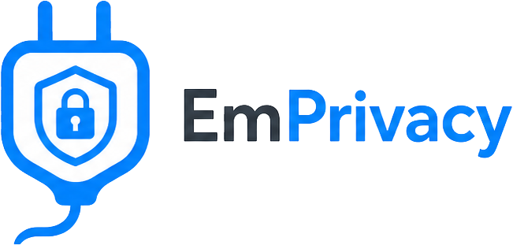

Native to EmDash 1.0.1
Register emprivacyPlugin() in plugins. The banner is an EmDash page fragment, settings live in the admin, and official embed blocks can be replaced with placeholders. EmDash 0.x is not supported.

Version 3.1.0 EmDash 1.0.1 MIT
EmPrivacy is an open-source native plugin that puts a consent banner on an EmDash site, then loads analytics, marketing scripts, and official embeds only after the visitor allows that category.
A pasted cookie bar does not know how an EmDash site is built. EmPrivacy 3.1.0 does. It is the consent plugin written for EmDash 1.0.1: one banner, one first-party choice, and script loading that follows that choice.
Register emprivacyPlugin() in plugins. The banner is an EmDash page fragment, settings live in the admin, and official embed blocks can be replaced with placeholders. EmDash 0.x is not supported.
Analytics and marketing scripts you configure stay out of the page until that category is allowed. YouTube and Vimeo stay placeholders, then mount only from allowlisted player hosts. Other plugins can ask window.emprivacy instead of adding a second banner.
Consent is a first-party emprivacy_cc cookie. EmPrivacy is not another vendor in the middle. The package is MIT-licensed source you can read, pin with a semver range, and upgrade on your own schedule.
Categories, presets, and embed gating from earlier releases, plus the 3.1.0 controls for placement, color, Global Privacy Control, cookie cleanup, keyboard use, a consent-log download, and Microsoft tags.
First visit offers Accept all, Reject non-essential, and Customize. Essential stays on. Functional, Analytics, and Marketing start unchecked when strict defaults are on. A cookie button reopens the panel later. Changing the policy version asks again.
Placeholders can cover EmDash YouTube, Vimeo, X, Bluesky, Mastodon, Gist, and link-preview blocks until Functional or Marketing is allowed. YouTube and Vimeo become allowlisted iframes. Social, Gist, and link previews become https links. Raw iframes you paste yourself are left alone.
Optional Google Consent Mode v2 writes denied defaults in the head, then updates them after a choice. Clarity and UET queue a denied signal before those tags load. If the browser sends Global Privacy Control, Marketing stays off, including after Accept all, until the signal is gone.
Pin the bar to the bottom or the top. Chrome ships for English, German, French, Spanish, Italian, Dutch, Portuguese, and Polish, with optional JSON for the title and message. Profiles are Slate, Paper, Ink, Indigo, and Primer, or custom hex colors. Focus moves into the banner, Tab stays inside it, and Escape closes the reopen panel.
Settings generate a vendor list for the cookie policy, without tokens. Optional server logging stores the choice, not an IP, and a signed-in admin can download it as CSV. Themes call window.emprivacy.has(), get(), open(), and onChange(). Turning Analytics or Marketing off expires a fixed list of known first-party cookie names for the presets EmPrivacy loads.
Requires EmDash ^1.0.1 and Node.js >= 22.16. Register it as a native plugin, not a sandboxed one.
pnpm add @emplugins/emprivacy@^3.1.0import emdash from "emdash/astro";
import { emprivacyPlugin } from "@emplugins/emprivacy";
export default defineConfig({
integrations: [
emdash({
plugins: [
emprivacyPlugin(),
],
}),
],
});Put EmPrivacy first when other plugins inject analytics in the head. Publish a privacy policy page, then set its path in the admin under the shield, EmPrivacy. Full steps are in the getting started guide.